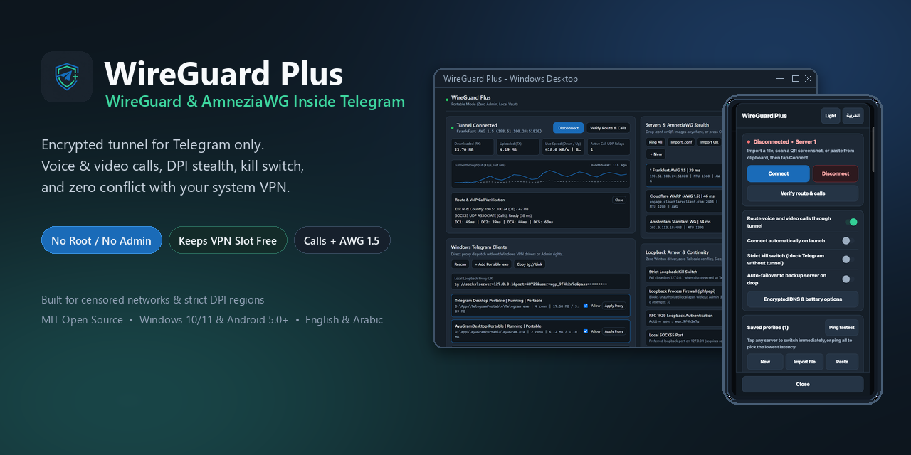
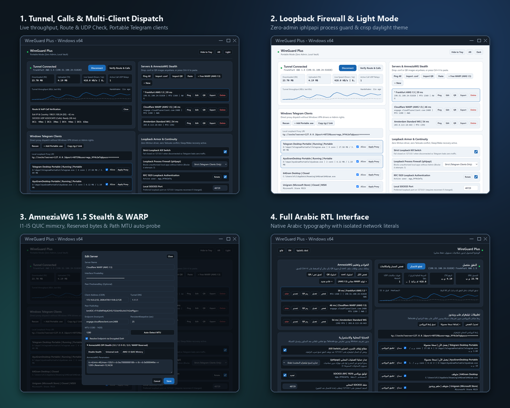

WireGuard Plus - WireGuard & AmneziaWG Inside Telegram
Encrypted WireGuard & AmneziaWG 1.5 tunnel strictly for Telegram on Windows (zero Admin, zero Wintun/Tailscale conflict, Portable USB mode) and Android (zero root, keeps Android's VPN slot free) with encrypted voice & video calls.
Why WireGuard Plus?
Zero Admin & Zero VPN Slot Conflict
Runs purely in userspace via wireguard-go + gVisor netstack. Installs zero Wintun drivers on Windows and leaves Android's VpnService slot free so Tailscale, AdGuard, games, and work VPNs run untouched.
Multi-Client Windows + Portable USB Mode
Detects Telegram Desktop, Telegram Portable, AyuGramDesktop, 64Gram, Forkgram, and Unigram automatically. Portable ZIP stores everything inside ./wgplus-data/ with zero AppData writes.
Armored Loopback Security
Windows enforces a zero-admin iphlpapi Process Firewall, RFC 1929 per-install authentication, Windows DPAPI vault encryption, and Argon2id + AES-256-GCM .wgplus portable backups.
AmneziaWG 1.5 & 1-Click Free WARP
Supports Jc/Jmin/Jmax, S1-S4, H1-H4, AWG 1.5 QUIC mimicry (I1-I5), Cloudflare WARP Reserved header bytes, and direct-IP Encrypted DoH lookup.
Encrypted Voice & Video Calls
Routes messaging TCP and real-time UDP media over SOCKS5 UDP ASSOCIATE with TCP fallback, fail-closed Kill Switch, and multi-server auto-failover.
Bilingual Dark & Light Experience
Full English (LTR) and Arabic (RTL) interfaces across both Windows Desktop (Wails + WebView2 + System Tray) and Android (LSPatch rootless / LSPosed rooted).
Windows Desktop Showcase & Walkthrough

Video Walkthrough (720p H.264)
Android In-App Showcase